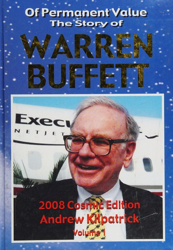

安德鲁·基尔帕特里克（Andrew Kilpatrick）1965年毕业于华盛顿与李大学，随后在印度做了两年和平队志愿者，又拿到佛蒙特大学英语硕士学位，在美国海军服役三年。此后他在阿拉巴马州伯明翰做了二十年报纸记者，其中八年是《伯明翰邮先驱报》（Birmingham Post-Herald）的商业记者。1992年他转行做了证券经纪人，先在保德信证券（Prudential Securities），后转至富国银行（Wells Fargo），一直做到2010年7月1日退休。也是在1992年，他出版了第一本关于巴菲特的书《Warren Buffett: The Good Guy of Wall Street》。两年后，他把这本书大幅扩充并自费出版，改名为《Of Permanent Value: The Story of Warren Buffett》，此后几乎每年都要重新修订、增补一版，一版接一版地印，从1994年的一卷本，一路印到后来动辄两卷、上千页的巨著。
这本书的写法与洛温斯坦（Roger Lowenstein）或施罗德（Alice Schroeder）的传记不同：它大体沿着时间推进，却经常中断年表，把伯克希尔的同类业务、长期持股和经营子公司归在一起；数百个短章又能各自独立阅读。每个小节记录一件具体的事：巴菲特六岁时把一板可口可乐拆开单瓶零卖，加价约20%赚差价；他小时候腰上常年别着一个金属找零器当玩具；某个深夜在香港的麦当劳，他和比尔·盖茨边吃巨无霸边聊麦当劳全球门店在面包、肉饼、薯条和价格上的一致性。2003年的"加州版"（California Edition）记录了巴菲特为施瓦辛格竞选加州州长背书一事，追访了几十年前听过巴菲特演讲的斯坦福商学院学生，还收录了对当年84岁的哈里·博特尔（Harry Bottle）的专访，此人是巴菲特早年专门收拾烂摊子的"救火队长"。书中也记录了2008年金融危机期间伯克希尔如何在富国银行股价暴跌时持续加仓——这与基尔帕特里克本人多年供职于富国银行的经历形成了呼应。到2017年"世界版"，全书已有329个短章、1316页和2200张照片，绝大部分为彩色。
这本书的一大特色是基尔帕特里克把巴菲特本人对这套书的调侃也当成卖点，印在了后续几版的封底或宣传文案上：巴菲特看过较早、较薄的一版后评价道"有点单薄"（"A bit skimpy"）——这句轻描淡写的调侃，此后被反复用在2007年国际版、2009年伍德斯托克版等厚达千余页的版本上，成了这本书越写越厚的一个自嘲式注脚。1998年，麦格劳-希尔（McGraw-Hill）出版社出过一版890页的正式版本；同年，上海远东出版社出版了中译本《永恒的价值：投资天才沃伦·巴菲特传》，由张建平等人翻译，全书411页，定价16元——这是基尔帕特里克当时篇幅还相对克制的一版的译本，此后书越出越厚的历次续订并未再引进中文版。
这套书提供的不是一套分析框架，而是持续扩张的编年资料：历年股东大会问答、伯克希尔子公司的并购细节、人物轶事、照片和巴菲特语录被并排收录。巴菲特常把伯克希尔股东大会称作"资本家的伍德斯托克"（"our capitalist version of Woodstock"），基尔帕特里克便把2009年版命名为"伍德斯托克版"（Woodstock Edition），做成两卷本。它更接近一位独立编年者长期维护的资料库，而不是论点单一、篇幅紧凑的传记；优点是能查到主流传记略过的小人物和公司细节，缺点则是材料来源、重要性和重复程度并不总有统一筛选标准。阅读时最好用伯克希尔年报、股东大会实录和同期报道交叉核对，而不要把篇幅或照片数量本身当成权威性的证明。